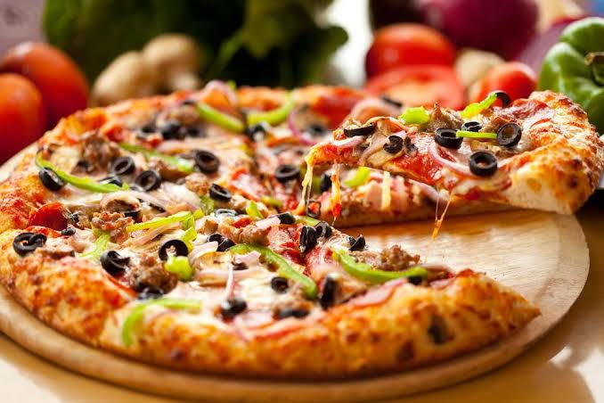

Pizza Recipes

Description About This Delicious Food
Pizza, dish of Italian origin consisting of a flattened disk of bread dough topped with some combination of olive oil, oregano, tomato, olives, mozzarella or other cheese, and many other ingredients, baked quickly—usually, in a commercial setting, using a wood-fired oven heated to a very high temperature—and served hot.
Ingredients
- flour
- salt
- suger
- instsant yeast
- warm water
- olive oil
- pizza sauce
- shredded mozzarella cheese
Steps
- Mix flour, salt, and sugar in a bowl. Dissolve yeast in warm water.
- Combine yeast mixture and olive oil with the dry ingredients to form a dough.
- Knead the dough for 5-7 minutes until smooth. Let it rise for 1-2 hours.
- Preheat oven to 475°F (245°C).
- Divide dough into two portions. Roll out each into a 12-inch round.
- Transfer dough to a baking sheet or pizza stone.
- Spread sauce and cheese over the crust.
- Add desired toppings.
- Bake for 12-15 minutes until crust is golden and cheese is bubbly.
- Let it cool slightly before serving.